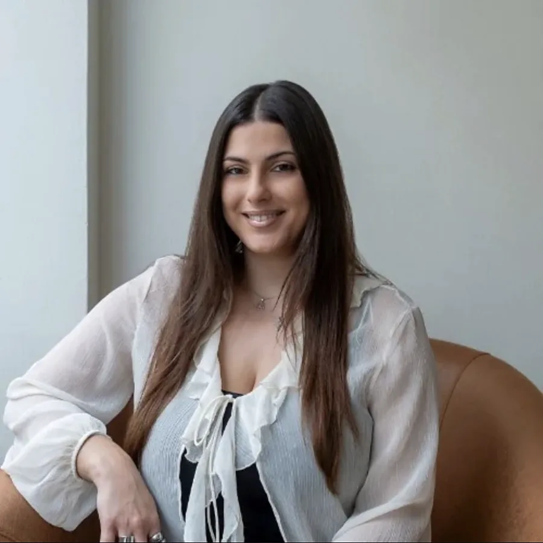

Ένα ήρεμο πλαίσιο για να ξαναβρείτε τον εαυτό σας.
Γνωσιακή-συμπεριφορική ψυχοθεραπεία για ενήλικες και εφήβους, δια ζώσης στο κέντρο της Θεσσαλονίκης ή online — με ένα πλάνο που χτίζετε μαζί, στον δικό σας ρυθμό.

Θεραπεία με μέθοδο, όχι απλώς μια συζήτηση.
Ο τρόπος που σκεφτόμαστε διαμορφώνει το πώς νιώθουμε και το πώς ενεργούμε. Στη γνωσιακή-συμπεριφορική θεραπεία εξετάζουμε μαζί αυτή τη σύνδεση — ήρεμα, χωρίς κριτική — και αλλάζουμε ό,τι σας κρατά στάσιμους.
Η CBT είναι από τις πιο τεκμηριωμένες μορφές ψυχοθεραπείας για το άγχος, τον πανικό, την κατάθλιψη και την ιδεοψυχαναγκαστική διαταραχή. Είναι δομημένη και πρακτική: από κάθε συνεδρία φεύγετε με κάτι συγκεκριμένο να δοκιμάσετε, και βλέπετε την αλλαγή να συμβαίνει εβδομάδα με την εβδομάδα.
Σε τι μπορούμε να δουλέψουμε μαζί.
Ατομικές συνεδρίες 60 λεπτών για ενήλικες και εφήβους, και συμβουλευτική γονέων. Πατήστε σε μια γραμμή για να διαβάσετε περισσότερα.
Άγχος & στρεςΌταν το μυαλό δεν σταματά
Διαρκής ανησυχία, ένταση στο σώμα, δυσκολία στον ύπνο, η αίσθηση ότι κάτι κακό πρόκειται να συμβεί. Στη θεραπεία χαρτογραφούμε τι πυροδοτεί το άγχος σας και τις σκέψεις που το τροφοδοτούν, και εξασκούμε συγκεκριμένες δεξιότητες για να το μειώσουμε — τεχνικές αναπνοής και χαλάρωσης, αναδόμηση των καταστροφικών σκέψεων, σταδιακή έκθεση σε όσα αποφεύγετε. Στόχος δεν είναι να μην αγχωθείτε ποτέ ξανά, αλλά το άγχος να πάψει να ορίζει την ημέρα σας.
Κρίσεις πανικού & φοβίεςΜαθαίνοντας ότι το κύμα περνά
Η κρίση πανικού μοιάζει με κατάσταση έκτακτης ανάγκης: ταχυπαλμία, δύσπνοια, η βεβαιότητα ότι θα λιποθυμήσετε ή θα χάσετε τον έλεγχο. Η CBT έχει ιδιαίτερα ισχυρά αποτελέσματα εδώ. Πρώτα κατανοούμε τι πραγματικά συμβαίνει στο σώμα κατά τη διάρκεια μιας κρίσης, έπειτα δουλεύουμε τον φόβο για τα ίδια τα συμπτώματα και, βήμα βήμα, επιστρέφουμε στα μέρη και τις καταστάσεις που αποφεύγετε — το λεωφορείο, το σούπερ μάρκετ, την οδήγηση, έναν γεμάτο χώρο.
Κατάθλιψη & χαμηλή διάθεσηΒρίσκοντας ξανά ενέργεια για την αρχή
Απώλεια ενδιαφέροντος για όσα κάποτε σας ευχαριστούσαν, εξάντληση που ο ύπνος δεν διορθώνει, μια σκληρή εσωτερική φωνή, απομάκρυνση από τους ανθρώπους. Η κατάθλιψη στενεύει τη ζωή· η θεραπεία την ανοίγει ξανά. Δουλεύουμε σε δύο μέτωπα ταυτόχρονα: τις σκέψεις που σας κρατούν χαμηλά και τις μικρές καθημερινές ενέργειες που σταδιακά επαναφέρουν ενέργεια, επαφή και νόημα. Η πρόοδος μετριέται συνεδρία με τη συνεδρία, ώστε να τη βλέπετε ακόμη και τις μέρες που δεν την αισθάνεστε.
Ιδεοψυχαναγκαστική διαταραχή (ΙΨΔ)Σπάζοντας τον κύκλο ιδεοληψιών και τελετουργιών
Παρείσακτες σκέψεις που δεν φεύγουν, έλεγχοι, πλύσιμο, μέτρημα, η ανάγκη τα πράγματα να είναι «ακριβώς σωστά». Η ΙΨΔ είναι εξαντλητική και συχνά κρύβεται από ντροπή. Η πιο αποτελεσματική θεραπεία είναι μια συγκεκριμένη μορφή CBT — η έκθεση με παρεμπόδιση της αντίδρασης — στην οποία αντιμετωπίζουμε σταδιακά τη φοβική σκέψη ή κατάσταση χωρίς να εκτελούμε την τελετουργία, μέχρι το άγχος να χάσει τη δύναμή του. Προχωράμε με ρυθμό που συμφωνείτε εσείς, ποτέ με ρυθμό που επιβάλλεται.
Θυμός & πένθοςΧώρος για όσα είναι πολύ μεγάλα να τα κρατάτε μόνοι
Θυμός που βγαίνει πιο αιχμηρός από όσο θέλετε και σας κοστίζει σχέσεις· ή μια απώλεια που όλοι οι άλλοι φαίνεται να έχουν προσπεράσει, ενώ εσείς στέκεστε ακόμη μέσα της. Και τα δύο αξίζουν έναν δικό τους χώρο. Για τον θυμό δουλεύουμε την αναγνώριση των πρώιμων σημαδιών, τις σκέψεις πίσω από το ξέσπασμα και ηρεμότερους τρόπους να εκφράζετε αυτό που χρειάζεστε. Στο πένθος δεν υπάρχει κάτι να «διορθωθεί» — δουλεύουμε ώστε ο πόνος να γίνει βαστάξιμος και η ζωή να ξαναζείται σιγά σιγά δίπλα του.
Έφηβοι & συμβουλευτική γονέωνΣτήριξη για όλο το οικογενειακό σύστημα
Η εφηβεία φέρνει άγχος για το σχολείο και τις εξετάσεις, αλλαγές στη διάθεση, δυσκολίες με τους φίλους, απομόνωση ή συγκρούσεις στο σπίτι. Με εμπειρία ως σχολική ψυχολόγος στη δευτεροβάθμια εκπαίδευση, η Χριστίνα δουλεύει με τους εφήβους με τρόπο που σέβεται την ιδιωτικότητά τους και κερδίζει την εμπιστοσύνη τους, και ξεχωριστά προσφέρει στους γονείς έναν χώρο να καταλάβουν τι συμβαίνει και πώς να ανταποκριθούν — χωρίς ενοχές, με πρακτικά βήματα.
Αυτοεκτίμηση & αυτοεικόναΜια πιο ευγενική, πιο ακριβής ματιά στον εαυτό σας
Η αίσθηση ότι ποτέ δεν είστε αρκετά καλοί, η διαρκής σύγκριση, το «ναι» όταν εννοείτε «όχι», η δυσκολία να δεχτείτε ένα κομπλιμέντο. Η χαμηλή αυτοεκτίμηση χτίζεται συνήθως πάνω σε παλιούς κανόνες που δεν αμφισβητήσαμε ποτέ. Στη θεραπεία εντοπίζουμε αυτούς τους κανόνες, τους ελέγχουμε απέναντι στην πραγματικότητα και χτίζουμε μια πιο σταθερή αίσθηση αξίας, που δεν εξαρτάται από το τελευταίο πράγμα που πήγε καλά ή στραβά. Η διεκδικητικότητα, τα όρια και η αυτοσυμπόνια εξασκούνται, δεν συζητούνται μόνο.
Επιλέξτε ό,τι σας μοιάζει πιο κοντά,
και δείτε πώς θα ξεκινούσαμε.
Δεν πρόκειται για διάγνωση — μόνο μια πρώτη, ειλικρινής εικόνα του πώς θα ήταν οι πρώτες συνεδρίες για εσάς.
Σπούδασε στο ΑΠΘ, ασκεί με φροντίδα.
Η Χριστίνα Κουτσούδη, MSc, είναι αδειούχος ψυχολόγος με ειδίκευση στην Κλινική Ψυχική Υγεία. Διατηρεί ιδιωτικό γραφείο στο κέντρο της Θεσσαλονίκης και παράλληλα εργάζεται ως ψυχολόγος στην Κινητή Μονάδα Ψυχικής Υγείας Ενηλίκων Ημαθίας. Ενημερώνεται διαρκώς μέσα από συνέδρια και βρίσκεται υπό συνεχή εποπτεία.
- 2023 — σήμεραΚινητή Μονάδα Ψυχικής Υγείας Ενηλίκων ΗμαθίαςΨυχολόγος — κοινοτική φροντίδα ψυχικής υγείας παράλληλα με το ιδιωτικό γραφείο.
- 2021 — σήμεραΙδιωτικό γραφείο · κέντρα ψυχοθεραπείαςΑτομική ψυχοθεραπεία ενηλίκων και εφήβων· προηγούμενη εργασία σε κέντρα ειδικών θεραπειών και ψυχοθεραπευτικό κέντρο.
- 2020 — 2023MSc Κλινική Ψυχική Υγεία, με άρισταΤμήμα Ιατρικής, Αριστοτέλειο Πανεπιστήμιο Θεσσαλονίκης.
- 2021 — 2022Σχολική ψυχολόγος, δευτεροβάθμια εκπαίδευσηΔουλεύοντας με εφήβους, εκπαιδευτικούς και γονείς μέσα στο σχολείο.
- 2018 — σήμεραΕκπαίδευση στη Γνωσιακή-Συμπεριφορική ΘεραπείαΕλληνική Εταιρεία Έρευνας Συμπεριφοράς (ΕΕΕΣ), σύμφωνα με τα κριτήρια της EABCT.
- 2014 — 2018Πτυχίο ΨυχολογίαςΑριστοτέλειο Πανεπιστήμιο Θεσσαλονίκης. Εθελοντική εργασία σε ΜΚΟ και κέντρα ειδικής αγωγής.
Πολύ ήρεμη παρουσία που εμπνέει εμπιστοσύνη. Χαίρομαι που ξεκίνησα το ταξίδι της ψυχοθεραπείας με την Χριστίνα.
Παναγιώτα · doctoranytime
Είναι το καλύτερο δώρο που έκανα εγώ στον εαυτό μου.
Κατερίνα · doctoranytime
Πολύ ευγενική και προσιτή. Με βοηθάει κάθε συνεδρία μαζί της.
Ανδρεάνα · doctoranytime
Πριν την πρώτη συνεδρία.
Όσα ρωτούν συνήθως πριν κλείσουν ραντεβού. Αν κάτι λείπει, γράψτε μας.
Πόσο διαρκεί μια συνεδρία και πόσο συχνά συναντιόμαστε;
Κάθε συνεδρία διαρκεί πλήρη 60 λεπτά. Οι περισσότεροι ξεκινούν με μία συνεδρία την εβδομάδα· όσο τα πράγματα βελτιώνονται, τις αραιώνουμε μαζί. Ο ρυθμός συμφωνείται πάντα με εσάς, ποτέ δεν επιβάλλεται.
Μπορούμε να κάνουμε τις συνεδρίες online;
Ναι. Οι συνεδρίες γίνονται είτε δια ζώσης στο γραφείο στο κέντρο της Θεσσαλονίκης, είτε με βιντεοκλήση. Οι online συνεδρίες έχουν ακριβώς την ίδια δομή και εμπιστευτικότητα, και πολλοί συνδυάζουν τα δύο.
Τι ακριβώς είναι η γνωσιακή-συμπεριφορική θεραπεία;
Η CBT είναι μια δομημένη, επιστημονικά τεκμηριωμένη ψυχοθεραπεία που δουλεύει τη σύνδεση σκέψεων, συναισθημάτων και συμπεριφοράς. Είναι πρακτική και εστιασμένη στο παρόν: εντοπίζουμε μαζί τα μοτίβα που συντηρούν ένα πρόβλημα και εξασκούμε νέους τρόπους σκέψης και δράσης, μέσα στη συνεδρία και στην καθημερινότητα.
Πόσες συνεδρίες θα χρειαστώ;
Εξαρτάται από το τι αντιμετωπίζετε και από τους στόχους σας. Η CBT είναι συνήθως συντομότερη από άλλες προσεγγίσεις, επειδή είναι προσανατολισμένη σε στόχους. Μετά τις πρώτες συνεδρίες συμφωνούμε ένα πλάνο και το επανεξετάζουμε τακτικά, ώστε να ξέρετε πάντα πού βρίσκεστε.
Δέχεστε εφήβους;
Ναι. Η Χριστίνα δουλεύει με εφήβους σε ατομικές συνεδρίες και, ξεχωριστά, με τους γονείς τους. Με τους εφήβους η ιδιωτικότητα γίνεται σεβαστή και όσα λέγονται στη συνεδρία μένουν εκεί, εκτός αν η ασφάλεια απαιτεί διαφορετικά — κάτι που εξηγείται καθαρά από την αρχή.
Υπάρχει μειωμένη τιμή για φοιτητές ή ανέργους;
Ναι, υπάρχει ειδική τιμή για φοιτητές και ανέργους. Αναφέρετέ το όταν κλείνετε ραντεβού και θα ενημερωθείτε για το ακριβές κόστος πριν την πρώτη συνεδρία — δεν υπάρχουν ποτέ εκπλήξεις.
Τι γίνεται αν χρειαστεί να ακυρώσω;
Ενημερώστε μας έως 3 ώρες πριν το ραντεβού και η συνεδρία μεταφέρεται χωρίς χρέωση. Δεκτές πληρωμές με κάρτα και μετρητά.
Είναι εμπιστευτικά όσα λέω;
Απολύτως. Η εμπιστευτικότητα είναι το θεμέλιο της θεραπείας και προστατεύεται από τον κώδικα δεοντολογίας του ψυχολόγου. Τίποτα δεν κοινοποιείται σε κανέναν χωρίς τη συγκατάθεσή σας, εκτός από τις σπάνιες περιπτώσεις που ο νόμος το απαιτεί για την προστασία της ζωής.
Το πρώτο βήμα είναι ένα μήνυμα.
Γράψτε δυο λόγια για το τι σας φέρνει εδώ, ή κλείστε απευθείας ραντεβού. Θα λάβετε απάντηση μέσα σε μία εργάσιμη ημέρα.
ΘεσσαλονίκηΣτο Λιμάνι, λίγα λεπτά με τα πόδια από τα Λαδάδικα και την Πλατεία Ελευθερίας. Λεωφορεία σταματούν στην Κουντουριώτου· στάθμευση στο πάρκινγκ του λιμανιού.
Στείλτε ένα μήνυμα
Εμπιστευτικό. Το διαβάζει μόνο η Χριστίνα.
Η Χριστίνα θα επικοινωνήσει μαζί σας μέσα σε μία εργάσιμη ημέρα.
Προτιμάτε να κλείσετε ώρα αμέσως; Ανοίξτε το προφίλ στο doctoranytime.